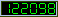

Conheça o Firebird em 2 minutos por Carlos H. Cantu - revisão 1.1 - Novembro/2006 Esse documento também está disponível em formato PDF (em inglês) |
Introdução Se estiver lendo esse documento, então provavelmente é o seu primeiro contato com o banco de dados Firebird. Esse documento apresentará as principais características do Firebird. No final, tenho certeza que estará ansioso para baixar o minúsculo instalador e testar você mesmo! História O Firebird é derivado do código do Borland InterBase 6.0. Ele tem o código aberto e não possui licença dupla, portanto você pode utilizá-lo em qualquer tipo de aplicação, seja ela comercial ou não, sem pagar nada por isso - é totalmente GRATUITO! A tecnologia usada no Firebird tem mais de 20 anos, fazendo com que ele seja um produto muito maduro e estável. Principais Recursos Não se engane com o tamanho do instalador! O Firebird é um SGBD completo e poderoso. Ele pode gerenciar bancos de dados de alguns Kbytes até dezenas de Gigabytes com boa performance e praticamente sem necessidade de manutenção! Abaixo segue uma lista dos principais recursos do Firebird:
|
Teste agora! Testar o Firebird é uma tarefa muito fácil. O instalador não tem mais que 5 MB (dependendo do sistema operacional escolhido) e totalmente automatizado. Você pode baixá-lo do Site oficial do Firebird. A última versão estável é a 2.0. Note que o servidor Firebird é disponibilizado em três variações: SuperServer, Classic e Embedded. Comece com a SuperServer. Atualmente, a versão Classic é indicada para máquinas com mais de um processador e em algumas situações específicas. O SuperServer compartilha o cache entre as conexões com o banco, e utiliza threads para gerenciar cada conexão. A versão Classic inicia um processo independente do servidor para cada conexão estabelecida. A versão embedded é uma variação fantástica do servidor. Consiste em um servidor Firebird completo composto por apenas alguns arquivos. É muito fácil de distribuí-lo, pois não há necessidade de instalação. Torna-se ideal para o uso em catálogos em CDROM, versões de avaliação de utilitários ou aplicações standalone. O Firebird vem com uma série de utilitários de linha de comando que permitem criar bancos de dados, recuperar estatísticas, executar comandos e scripts SQL, efetuar backups e restores, etc. Caso prefira uma ferramenta com interface gráfica, existem inúmeras opções para a sua escolha, incluindo opções gratuitas. Veja a lista no final desse documento para ter uma idéia por onde começar. No Windows, o Firebird pode ser executado como um serviço ou no modo de aplicação. O instalador pode criar um ícone no Painel de Controle do Windows que permite a você iniciar ou parar o servidor. Documentação Há um número enorme de documentos, FAQs e artigos disponíveis no site oficial do Firebird. Você também pode verificar se no seu país existe uma comunidade ou lista de discussão, a fim de obter suporte em sua língua nativa. Todas essas informações podem ser encontradas nas diversas seções do site oficial do Firebird. Acesse periodicamente o site www.firebirdnews.org para ficar atualizado quanto às notícias mais recentes do mundo Firebird. Para todos os tamanhos de BD Algumas pessoas pensam que o Firebird é um SGBD para ser usado apenas com pequenos bancos de dados ou poucas conexões. Eles estão errados! O FB é usado com grandes bancos de dados e considerável número de conexões. Um bom exemplo foi mostrado na Softool'06, onde o Avarda (ERP russo) estava rodando com um servidor Firebird 2.0 Classic e um número médio de 100 conexões simultâneas, acessando um banco de dados de 120GB com 700 milhões de registros! O servidor era uma máquina bi-processada (2 CPUs - Dell PowerEdge 2950) com 6GB de RAM. |
||
Ferramentas e Componentes Abaixo segue uma lista com alguns links interessantes para obtenção de recursos como ferramentas, drivers, etc. Verifique o site oficial do Firebird para uma lista mais completa e atualizada. Ferramentas de Administração
Drivers e componentes de acesso
|
Replicação Suporte e informações
Diversos Documentos e manuais
Quer ajudar ? Devido à natureza de um projeto de código aberto, qualquer pessoa pode contribuir desenvolvendo novos recursos ou corrigindo bugs. Se quiser se tornar membro do Time de Desenvolvedores do Firebird, baixe o código fonte do Firebird do site sourceforge e estude-o. Pode ser interessante se cadastrar na lista de discussão fbdevel para entrar em contato com os outros desenvolvedores do projeto (nota: a fbdevel não é uma lista geral de suporte, portanto não envie questões de suporte para ela. Ao invés disso, utilize a lista da FireBase ou a lista internacional de suporte para suporte gratuito da comunidade). Não é necessário ser um programador para ajudar o projeto. Torne-se um membro da Firebird Foundation ou faça uma doação e estará ajudando a financiar os principais desenvolvedores para que eles possam dedicar mais tempo ao projeto. Obrigado pelos seus dois minutos... | ||
Número de visualizações : 